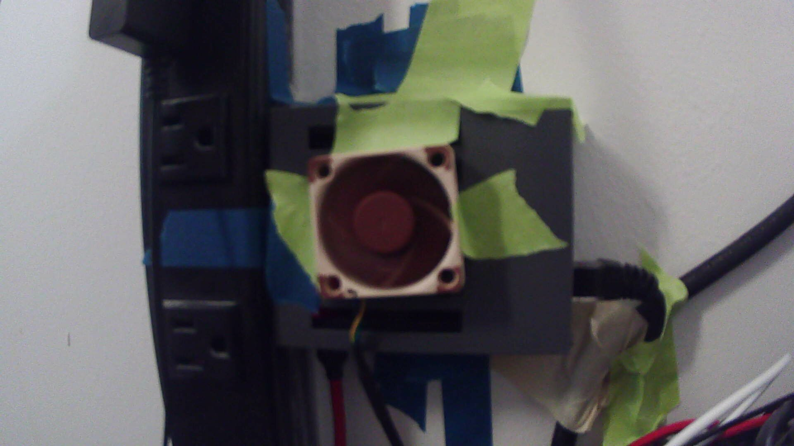
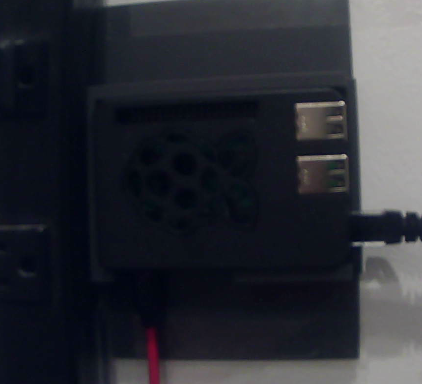
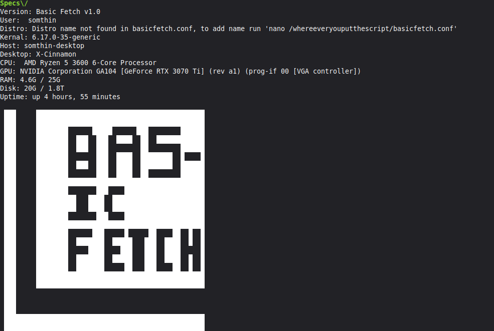

Somthin ig - "Home of The Wall Pi"
About me
Wsp, im somthin_ig and I am a proud student of the exclusive Unemployed Rat Arts (URA) collage. Personally I am a doomscrolling major and hope to graduate around 2069
Main PC
It is a custom built pc I built.
The specs of this PC are: CPU: Ryzen 7 5800X RAM: 32gb (8+8+16 lol) Storage: 2TB SATA SSD (boot), 512gb NVME ssd (games/misc) GPU: RTX 3070 TI (8gb) Motherboard: ASROCK B550 somthing... Case: NZXT H5 Flow OS: Linux Mint
Projects
The Wall Pi
It is a raspberry pi 3b+ taped to my wall, simple as that. It's currently being used as a DNS (pihole) and web server locally for making websites. Currently, it is being held up by painters tape, and im scared it will fall, though putting it on my desk like a normal person is too much work.
UPDATE!!! The Wall Pi is no longer jank! I have made a proper 3d printed mount and added a heatsink.


As of July 3rd, 2026 the Wall Pi has not fallen... yet
If you are interested in subscribing to the holy Wall Pi click here.
BasicFetch
BasicFetch is a simple, open-source and customizable neofetch-like Linux utility written in Bash
